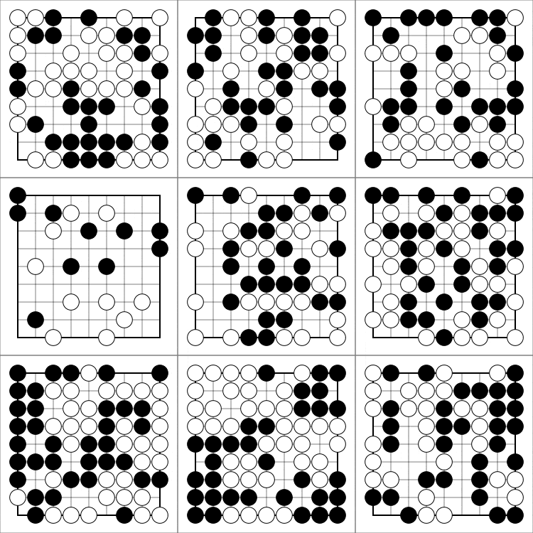

TL;DR
We can leverage recent advancements in JAX to train parallelised RL agents over 4000x faster entirely on GPUs. Unlike past RL implementations, ours is written end-to-end in Jax. This enables RL researchers to do things like:
- 🏃 Efficiently run tons of seeds in parallel on one GPU
- 💻 Perform rapid hyperparameter tuning
- 🦎 Discover new RL algorithms with meta-evolution
The simple, self-contained code is here: https://github.com/luchris429/purejaxrl.
Overview
This blog post is about a computational and experimental paradigm that powers many recent and ongoing works at the Foerster Lab for AI Research (FLAIR) that efficiently utilises GPU resources to meta-evolve new discoveries in Deep RL. The techniques that power this paradigm have the potential radically accelerate the rate of progress in Deep Reinforcement Learning (RL) research by more heavily utilising GPU resources, enabled by recent advancements in JAX. The codebase, PureJaxRL, vastly lowers the computational barrier of entry to Deep RL research, enabling academic labs to perform research using trillions of frames (closing the gap with industry research labs) and enabling independent researchers to get orders of magnitude more mileage out of a single GPU.
This blog post will be split into two parts. The first will be about the computational techniques that enable this paradigm. The second will discuss how we can effectively leverage these techniques to deepen our understanding of RL agents and algorithms with evolutionary meta-learning. We will then briefly describe three recent papers from our lab that heavily utilised this framework:
- Model-Free Opponent Shaping (ICML 2022)
- Discovered Policy Optimisation (NeurIPS 2022)
- Adversarial Cheap Talk (Preprint)
Part 1: Over 4000x Speedups with PureJaxRL
Section 1.1: Run Everything on the GPU!
Most Deep RL implementations run on a combination of CPU and GPU resources. Usually, the environments run on the CPU while the policy neural network and algorithms run on the GPU. To increase the wallclock time, practitioners run multiple environments in parallel using multiple threads. We will look at Costa Huang's amazing CleanRL library as an example of a well-benchmarked implementation of PPO under this "standard" paradigm.
Instead of using multiple threads for our environment, we can use Jax to vectorise the environment and run it on the GPU! Not only does this allow us to avoid having to transfer data between the CPU and GPU, but if we program our environment using Jax primitives, we can use Jax's powerful vmap function to instantly create a vectorised version of the environment. While re-writing RL environments in Jax can be time consuming, luckily for us, a few libraries have already done this for us for a variety of environments.
There are a few complementary libraries that we recommend:
- Gymnax is an awesome
library that contains several well-known environments such as Classic Control tasks, Bsuite tasks, and Minatar
(Atari-like) environments. I use it as the go-to library for testing and evaluating my code, and we will use it
for this blog post. It has many other really neat features and is very easy to use.


- Brax is the way to run Mujoco-like continuous control environments using Jax. The library has many RL environments directly analogous to popular continuous control environments, such as HalfCheetah and Humanoid. It's also differentiable!
- Jumanji contains a lot of incredibly cool, simple, and industry-driven environments. Many of the environments in this library come directly from industry settings, ensuring that the environments presented here are practical and relevant for the real world! These include combinatorial problems such as the famous Traveling Salesman Problem or 3D Bin Packing.



Let's look at some of the reported speedups for Gymnax below. CartPole-v1 in numpy, with 10 environments running in parallel, takes 46 seconds to reach one million frames. Using Gymnax on an A100, with 2k environments in parallel takes 0.05 seconds. That's a 1000x speedup. This applies to environments more complicated than CartPole-v1 as well. For example, Minatar-Breakout, which takes 50 seconds to reach one million frames on CPU only takes 0.2 seconds in Gymnax. These results show an improvement of several orders of magnitude, enabling academic researchers to efficiently run experiments involving trillions of frames on limited hardware.

There are many advantages to doing everything end-to-end in Jax. To name a few:
To demonstrate this, we closely replicated CleanRL's PyTorch PPO baseline implementation in pure Jax and jitted it end-to-end. We used the same number of parallel environments and the same hyperparameter settings, so we're not taking advantage of the massive environment vectorisation. We show the training plots below across 5 runs in CartPole-v1 and MinAtar-Breakout.


Now, let's swap out the x-axis for the wall-clock time instead of frames. It's over 10x faster without any extra parallel environments.


The code for this is shown below and is available at this repository. It's all within a single readable file, so it is easy to use!
Section 1.2: Running Many Agents in Parallel
We got a pretty good speedup from the above tricks. However, it's far from the 4000x speedup in the headline. How do we get there? By vectorising the entire RL training loop. This is really easy to do! Just use Jax's vmap we mentioned before! Now we can train many agents in parallel.
(Furthermore, we can use Jax's convenient pmap function to run on multiple GPU's! Previously, this type of parallelisation and vectorisation both across and especially within devices would have been a massive headache to write.)


That's more like it! If you're developing a new RL algorithm, you can quickly train on a statistically-significant number of seeds simultaneously on a single GPU. Beyond that, we can train thousands of independent agents at the same time! In the notebook we provide, we show how to use this for rapid hyperparameter search. However, we can also use this for evolutionary meta-learning!
Part 2: Meta-Evolving Discoveries for Deep RL
Meta-learning, or "learning to learn," has the potential to revolutionize the field of reinforcement learning (RL) by discovering general principles and algorithms that can be applied across a broad range of tasks. At FLAIR, we use the above computational technique to power new discoveries with Meta-RL by using evolution. This approach promises to enhance our understanding of RL algorithms and agents, and the advantages it offers are well worth exploring.
Traditional meta-learning techniques, which often use meta-gradients or higher-order derivatives, focus on quickly adapting to similar but unseen tasks using only a small number of samples. While this works well within specific domains, it falls short of achieving general-purpose learning algorithms that can tackle diverse tasks across many updates. This limitation becomes even more pronounced when attempting to meta-learn across millions of timesteps and thousands of updates, as gradient-based methods often result in high variance updates that compromise performance. For more information on the limitations of gradient-based meta-learning, we recommended reading Luke Metz's blog post on the topic.
Evolutionary methods, on the other hand, offer a promising alternative. By treating the underlying problem as a black box and avoiding explicitly calculating derivatives, they can efficiently and effectively meta-learn across long horizons. For a comprehensive introduction to these methods, we recommend David Ha's blog post. The key advantages of evolutionary strategies (ES) include:
At a high level, this approach mirrors the emergence of learning in nature, where animals have genetically evolved to perform reinforcement learning in their brains
The main criticism of evolutionary methods is that they can be slow and sample-inefficient, often requiring thousands of parameters to be evaluated simultaneously. This framework addresses these concerns by enabling rapid parallel evaluation with limited hardware, making the use of evolution in meta-RL an attractive and practical option.
A good library for doing this is Robert Lange's evosax library (He's also the creator of Gymnax!). We can easily hook up our RL training loop to this library and use it to perform extremely fast meta-evolution entirely on the GPU. Here's a simple example from an upcoming project. (Keep your eyes peeled for our paper on this!) In this example, we meta-learn the value loss function of a PPO agent on CartPole-v1. While L2 loss is the most popular choice for the value loss in PPO, we can instead parameterise this with a neural network and evolve it! On the outer loop, we sample the parameters for this neural network (which we will call meta-parameters), and on the inner loop we train RL agents from scratch using those meta-parameters for the value loss function. You can view the code and follow along in our provided notebook.
On a single Nvidia A40, we train 512 agents for 1024 generations, churning through over one hundred billion frames. In other words, we trained over half a million agents in ~9 hours on a single GPU! The resulting meta-learned value loss function is shown below.


Finally, we visualise, interpret, and understand what the learned meta-parameters are doing. In this case, we plot the loss function below.

That looks interesting -- it looks nothing like the standard L2 loss! It's not symmetric and it isn't even convex. This is currently ongoing preliminary work from an upcoming project. To summarise, the meta-evolving discovery framework involves:
Part 3: Case Studies
This is a very powerful framework that we use at FLAIR to better understand the behavior of RL algorithms and have used it in several published papers, which you can read below. We will also be releasing future blog posts going more in-depth into these works.
Discovered Policy Optimisation (NeurIPS 2022)
https://arxiv.org/abs/2210.05639
Deep RL has been driven by improvements in handcrafted algorithms. Our NeurIPS 2022 paper, “Discovered Policy Optimisation” instead meta-learns in a space of theoretically-sound algorithms and beats PPO on unseen tasks! w/ @kuba_AI @_aletcher @Luke_Metz @casdewitt @j_foerst 🧵 pic.twitter.com/H4Zp3siuZH
— Chris Lu (@_chris_lu_) November 23, 2022
Model-Free Opponent Shaping (ICML 2022)
https://arxiv.org/abs/2205.01447
General-sum games describe many scenarios, from negotiations to autonomous driving. How should an AI act in the presence of other learning agents? Our @icmlconf 2022 paper, “Model-Free Opponent Shaping”(M-FOS) approaches this as a meta-game. @_chris_lu_ @TimonWilli @casdewitt 🧵 pic.twitter.com/wshwxpTNTP
— Jakob Foerster (@j_foerst) July 13, 2022
Adversarial Cheap Talk (Preprint)
https://arxiv.org/abs/2211.11030
Tweet Thread TBD
Part 4: Related Works
The ideas described in this blog post builds upon the work of many others. We mentioned some of these above, but would like to provide further links to existing works that we believe would be relevant for readers of this blog. In particular, we would like to highlight the following papers:
Acknowledgements
We thank Jakob Foerster, Minqi Jiang, Timon Willi, Robert Lange, and Qizhen (Irene) Zhang for feedback on drafts of this blog post.
Citation
For attribution in academic contexts, please cite this work as
Lu et al., "Discovered Policy Optimisation", 2022.
BibTeX citation
@article{lu2022discovered,
title={Discovered policy optimisation},
author={Lu, Chris and Kuba, Jakub Grudzien and Letcher, Alistair and Metz, Luke and de Witt, Christian Schroeder and Foerster, Jakob},
booktitle={Advances in Neural Information Processing Systems}
year={2022}
}